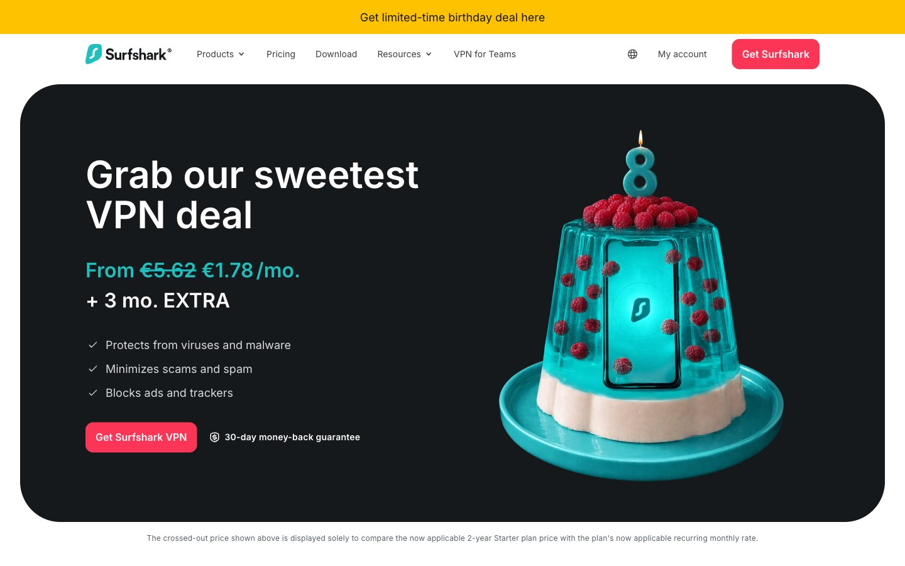

Surfshark 的 Design.md 主题展示，围绕安全合规、消费品牌、AI、数据仪表盘组织页面。
Explore Surfshark's mixed Other design system: Midnight Ink #16191c, Stormy Night #1e2327 colors, Inter typography, and DESIGN.md for AI agents.

#16191c: #16191c#1e2327: #1e2327#000000: #000000#f9f9f9: #f9f9f9#dadadd: #dadadd#5b6065: #5b6065#1ebfbf: #1ebfbf#ffffff: #ffffff#bfbfc0: #bfbfc0#393e41: #393e41#ffc200: #ffc200#fa3556: #fa3556fontFamily: [object Object]fontSize: [object Object]lineHeight: [object Object]letterSpacing: [object Object]control: 12pxcard: 12pxpreview: 12pxmobileGutter: 16pxouterGutter: 28pxsection: 64px